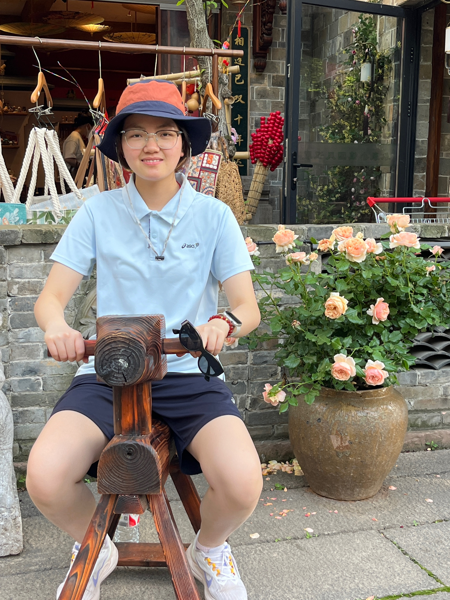

A warm glass of milk
Coffee? No thanks. My mornings start with a warm glass of milk — cozy, comforting, and quietly sweet.
Hi there, I'm
A first-year postgraduate in Digital Education at Xi'an Jiaotong-Liverpool University who loves turning ideas into clean, friendly, and human web experiences — one thoughtful detail at a time.

When I'm not pushing pixels or refactoring components, you'll usually find me with one of these.
Coffee? No thanks. My mornings start with a warm glass of milk — cozy, comforting, and quietly sweet.
New cities, new foods, new perspectives — every trip teaches me something no classroom ever could.
A slow walk along the river clears my head better than any to-do list ever could.